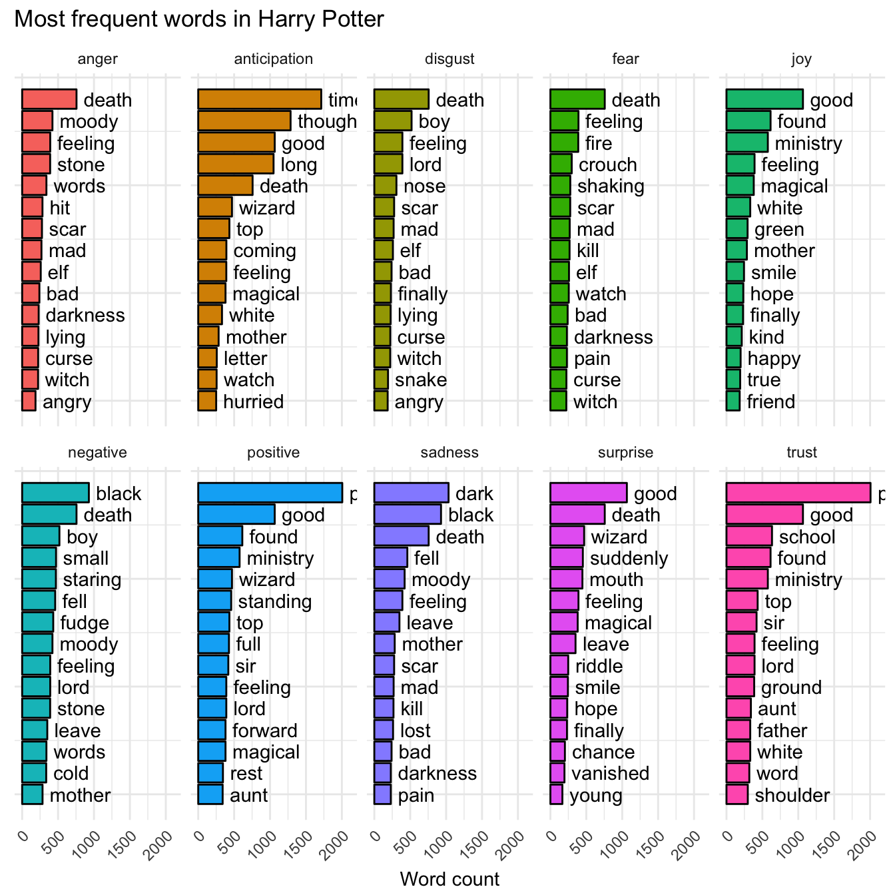
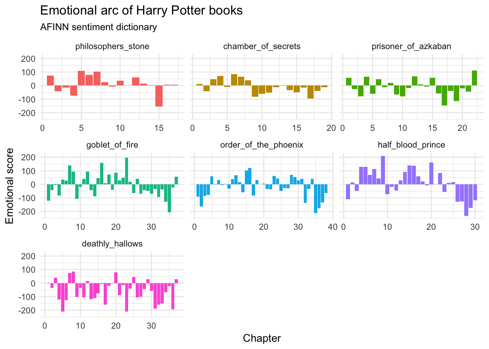
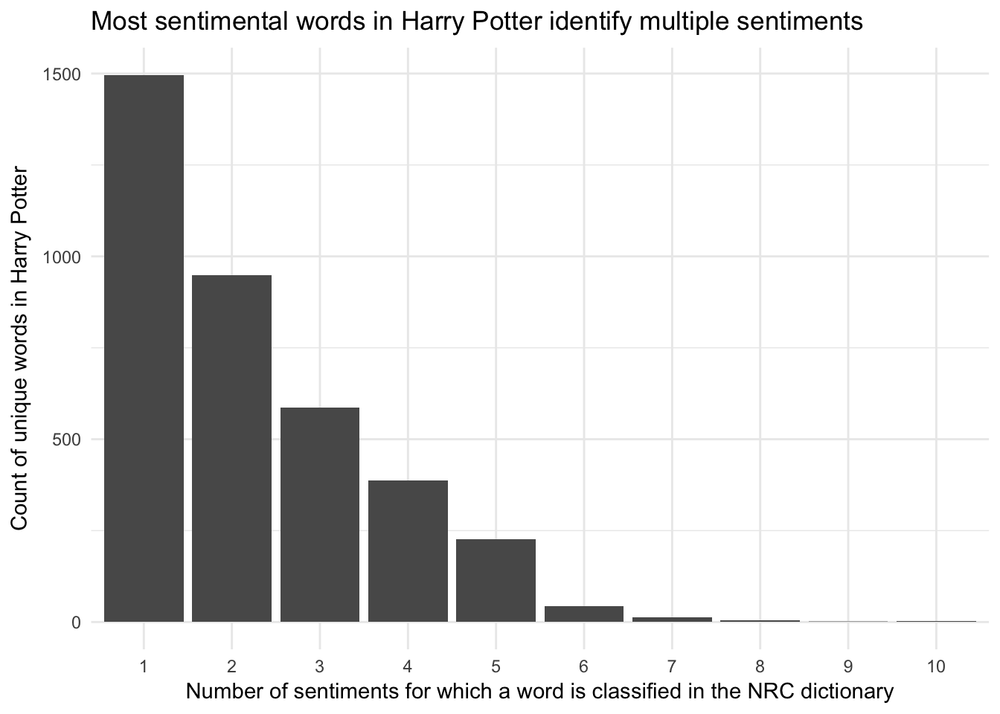

Practicing sentiment analysis with Harry Potter
library(tidyverse)
library(tidytext)
library(wordcloud)
library(harrypotter)
set.seed(1234)
theme_set(theme_minimal())Load Harry Potter text
devtools::install_github("bradleyboehmke/harrypotter")library(harrypotter)
# names of each book
hp_books <- c("philosophers_stone", "chamber_of_secrets",
"prisoner_of_azkaban", "goblet_of_fire",
"order_of_the_phoenix", "half_blood_prince",
"deathly_hallows")
# combine books into a list
hp_words <- list(
philosophers_stone = philosophers_stone,
chamber_of_secrets = chamber_of_secrets,
prisoner_of_azkaban = prisoner_of_azkaban,
goblet_of_fire = goblet_of_fire,
order_of_the_phoenix = order_of_the_phoenix,
half_blood_prince = half_blood_prince,
deathly_hallows = deathly_hallows
) %>%
# convert each book to a data frame and merge into a single data frame
map_df(as_tibble, .id = "book") %>%
# convert book to a factor
mutate(book = factor(book, levels = hp_books)) %>%
# remove empty chapters
filter(!is.na(value)) %>%
# create a chapter id column
group_by(book) %>%
mutate(chapter = row_number(book)) %>%
# tokenize the data frame
unnest_tokens(word, value)
hp_words## # A tibble: 1,089,386 x 3
## # Groups: book [7]
## book chapter word
## <fctr> <int> <chr>
## 1 philosophers_stone 1 the
## 2 philosophers_stone 1 boy
## 3 philosophers_stone 1 who
## 4 philosophers_stone 1 lived
## 5 philosophers_stone 1 mr
## 6 philosophers_stone 1 and
## 7 philosophers_stone 1 mrs
## 8 philosophers_stone 1 dursley
## 9 philosophers_stone 1 of
## 10 philosophers_stone 1 number
## # ... with 1,089,376 more rowsMost frequent words, by book
Remove stop words.
hp_words %>%
# delete stopwords
anti_join(stop_words) %>%
# summarize count per word per book
count(book, word) %>%
# highest freq on top
arrange(desc(n)) %>%
# identify rank within group
group_by(book) %>% #
mutate(top = seq_along(word)) %>%
# retain top 15 frequent words
filter(top <= 15) %>%
# create barplot
ggplot(aes(x = -top, y = n, fill = book)) +
geom_col(color = "black") +
# print words in plot instead of as axis labels
geom_text(aes(label = word), hjust = "left", nudge_y = 100) +
labs(title = "Most frequent words in Harry Potter",
x = NULL,
y = "Word count") +
facet_wrap( ~ book) +
coord_flip() +
theme(legend.position = "none",
# rotate x text
axis.text.x = element_text(angle = 45, hjust = 1),
# remove tick marks and text on y-axis
axis.ticks.y = element_blank(),
axis.text.y = element_blank())## Joining, by = "word"
Estimate sentiment
Generate data frame with sentiment derived from the NRC
(hp_nrc <- hp_words %>%
inner_join(get_sentiments("nrc")) %>%
group_by(book, chapter, sentiment))## Joining, by = "word"## # A tibble: 264,705 x 4
## # Groups: book, chapter, sentiment [2,000]
## book chapter word sentiment
## <fctr> <int> <chr> <chr>
## 1 philosophers_stone 1 boy disgust
## 2 philosophers_stone 1 boy negative
## 3 philosophers_stone 1 proud anticipation
## 4 philosophers_stone 1 proud joy
## 5 philosophers_stone 1 proud positive
## 6 philosophers_stone 1 proud trust
## 7 philosophers_stone 1 expect anticipation
## 8 philosophers_stone 1 expect positive
## 9 philosophers_stone 1 expect surprise
## 10 philosophers_stone 1 expect trust
## # ... with 264,695 more rowsVisualize which words in the NRC sentiment dictionary appear most frequently
Sometimes words which are defined in a general sentiment dictionary can be outliers in specific contexts. That is, an author may use a word without intending to convey a specific sentiment but the dictionary defines it in a certain way.
We can use a wordcloud as a quick check to see if there are any outliers in the context of Harry Potter.
library(wordcloud)
hp_nrc %>%
group_by(word) %>%
count() %>%
with(wordcloud(word, n, max.words = 100))
As we can see, “harry” appears quite frequently in the books. In the vast majority of appearances, “harry” is used to refer to the main character and is not meant to convey a specific sentiment.
get_sentiments("nrc") %>%
filter(word == "harry")## # A tibble: 3 x 2
## word sentiment
## <chr> <chr>
## 1 harry anger
## 2 harry negative
## 3 harry sadnessIt would be best to remove this word from further sentiment analysis, treating it as if it were another stop word.
hp_nrc <- hp_nrc %>%
filter(word != "harry")Visualize which words appear most frequently for each sentiment type
hp_nrc %>%
# summarize count per word
ungroup %>%
count(word, sentiment) %>%
# highest freq on top
arrange(desc(n)) %>%
# identify rank within group
group_by(sentiment) %>% #
mutate(top = seq_along(word)) %>%
# retain top 15 frequent words
filter(top <= 15) %>%
# create barplot
ggplot(aes(x = -top, y = n, fill = sentiment)) +
geom_col(color = "black") +
# print words in plot instead of as axis labels
geom_text(aes(label = word), hjust = "left", nudge_y = 100) +
labs(title = "Most frequent words in Harry Potter",
x = NULL,
y = "Word count") +
facet_wrap( ~ sentiment, ncol = 5) +
coord_flip() +
theme(legend.position = "none",
# rotate x text
axis.text.x = element_text(angle = 45, hjust = 1),
# remove tick marks and text on y-axis
axis.ticks.y = element_blank(),
axis.text.y = element_blank())
Visualize the positive/negative sentiment for each book over time using the AFINN dictionary
hp_words %>%
inner_join(get_sentiments("afinn")) %>%
group_by(book, chapter) %>%
summarize(score = sum(score)) %>%
ggplot(aes(chapter, score, fill = book)) +
geom_col() +
facet_wrap(~ book, scales = "free_x") +
labs(title = "Emotional arc of Harry Potter books",
subtitle = "AFINN sentiment dictionary",
x = "Chapter",
y = "Emotional score") +
theme(legend.position = "none")## Joining, by = "word"
# cumulative score
hp_words %>%
inner_join(get_sentiments("afinn")) %>%
group_by(book) %>%
mutate(cumscore = cumsum(score)) %>%
ggplot(aes(chapter, cumscore, fill = book)) +
geom_step() +
facet_wrap(~ book, scales = "free_x") +
labs(title = "Emotional arc of Harry Potter books",
subtitle = "AFINN sentiment dictionary",
x = "Chapter",
y = "Cumulative emotional score")## Joining, by = "word"
Visualize the sentimental content of each chapter in each book
hp_nrc %>%
count(sentiment, book, chapter) %>%
filter(!(sentiment %in% c("positive", "negative"))) %>%
# create area plot
ggplot(aes(x = chapter, y = n)) +
geom_col(aes(fill = sentiment)) +
# add black smoothing line without standard error
geom_smooth(aes(fill = sentiment), method = "loess", se = F, col = 'black') +
theme(legend.position = 'none') +
labs(x = "Chapter", y = "Emotion score", # add labels
title = "Harry Plotter: Emotions during the saga",
subtitle = "Using tidytext and the nrc sentiment dictionary") +
# seperate plots per sentiment and book and free up x-axes
facet_grid(sentiment ~ book, scale = "free")
NRC sentiment dictionary analysis
hp_nrc %>%
ungroup %>%
count(word, sentiment) %>%
count(word) %>%
mutate(nn = factor(nn, levels = 1:10)) %>%
ggplot(aes(nn)) +
geom_bar() +
labs(title = "Most sentimental words in Harry Potter identify multiple sentiments",
x = "Number of sentiments for which a word is classified in the NRC dictionary",
y = "Count of unique words in Harry Potter")
Acknowledgments
- This page is derived in part from Harry Plotter: Celebrating the 20 year anniversary with
tidytextand thetidyversein R and licensed under a Creative Commons Attribution-ShareAlike 4.0 International License.
Session Info
devtools::session_info()## Session info -------------------------------------------------------------## setting value
## version R version 3.4.1 (2017-06-30)
## system x86_64, darwin15.6.0
## ui X11
## language (EN)
## collate en_US.UTF-8
## tz America/Chicago
## date 2017-08-25## Packages -----------------------------------------------------------------## package * version date
## assertthat 0.2.0 2017-04-11
## backports 1.1.0 2017-05-22
## base * 3.4.1 2017-07-07
## bindr 0.1 2016-11-13
## bindrcpp * 0.2 2017-06-17
## boxes 0.0.0.9000 2017-07-19
## broom 0.4.2 2017-08-09
## cellranger 1.1.0 2016-07-27
## clisymbols 1.2.0 2017-05-21
## codetools 0.2-15 2016-10-05
## colorspace 1.3-2 2016-12-14
## compiler 3.4.1 2017-07-07
## crayon 1.3.2.9000 2017-07-19
## datasets * 3.4.1 2017-07-07
## devtools 1.13.3 2017-08-02
## digest 0.6.12 2017-01-27
## dplyr * 0.7.2.9000 2017-08-10
## evaluate 0.10.1 2017-06-24
## forcats * 0.2.0 2017-01-23
## foreign 0.8-69 2017-06-22
## ggplot2 * 2.2.1 2016-12-30
## glue 1.1.1 2017-06-21
## graphics * 3.4.1 2017-07-07
## grDevices * 3.4.1 2017-07-07
## grid 3.4.1 2017-07-07
## gtable 0.2.0 2016-02-26
## harrypotter * 0.1.0 2017-08-24
## haven 1.1.0 2017-07-09
## hms 0.3 2016-11-22
## htmltools 0.3.6 2017-04-28
## httr 1.3.1 2017-08-20
## janeaustenr 0.1.5 2017-06-10
## jsonlite 1.5 2017-06-01
## knitr 1.17 2017-08-10
## labeling 0.3 2014-08-23
## lattice 0.20-35 2017-03-25
## lazyeval 0.2.0 2016-06-12
## lubridate 1.6.0 2016-09-13
## magrittr 1.5 2014-11-22
## Matrix 1.2-11 2017-08-16
## memoise 1.1.0 2017-04-21
## methods * 3.4.1 2017-07-07
## mnormt 1.5-5 2016-10-15
## modelr 0.1.1 2017-08-10
## munsell 0.4.3 2016-02-13
## nlme 3.1-131 2017-02-06
## parallel 3.4.1 2017-07-07
## pkgconfig 2.0.1 2017-03-21
## plyr 1.8.4 2016-06-08
## psych 1.7.5 2017-05-03
## purrr * 0.2.3 2017-08-02
## R6 2.2.2 2017-06-17
## RColorBrewer * 1.1-2 2014-12-07
## Rcpp 0.12.12 2017-07-15
## readr * 1.1.1 2017-05-16
## readxl 1.0.0 2017-04-18
## reshape2 1.4.2 2016-10-22
## rlang 0.1.2 2017-08-09
## rmarkdown 1.6 2017-06-15
## rprojroot 1.2 2017-01-16
## rstudioapi 0.6 2016-06-27
## rvest 0.3.2 2016-06-17
## scales 0.4.1 2016-11-09
## slam 0.1-40 2016-12-01
## SnowballC 0.5.1 2014-08-09
## stats * 3.4.1 2017-07-07
## stringi 1.1.5 2017-04-07
## stringr * 1.2.0 2017-02-18
## tibble * 1.3.4 2017-08-22
## tidyr * 0.7.0 2017-08-16
## tidytext * 0.1.3 2017-06-19
## tidyverse * 1.1.1.9000 2017-07-19
## tokenizers 0.1.4 2016-08-29
## tools 3.4.1 2017-07-07
## utils * 3.4.1 2017-07-07
## withr 2.0.0 2017-07-28
## wordcloud * 2.5 2014-06-13
## xml2 1.1.1 2017-01-24
## yaml 2.1.14 2016-11-12
## source
## CRAN (R 3.4.0)
## CRAN (R 3.4.0)
## local
## CRAN (R 3.4.0)
## CRAN (R 3.4.0)
## Github (r-pkgs/boxes@03098dc)
## local
## CRAN (R 3.4.0)
## cran (@1.2.0)
## CRAN (R 3.4.1)
## CRAN (R 3.4.0)
## local
## Github (gaborcsardi/crayon@750190f)
## local
## CRAN (R 3.4.1)
## CRAN (R 3.4.0)
## Github (tidyverse/dplyr@65db321)
## CRAN (R 3.4.1)
## CRAN (R 3.4.0)
## CRAN (R 3.4.1)
## CRAN (R 3.4.0)
## CRAN (R 3.4.1)
## local
## local
## local
## CRAN (R 3.4.0)
## Github (bradleyboehmke/harrypotter@51f7146)
## CRAN (R 3.4.1)
## CRAN (R 3.4.0)
## CRAN (R 3.4.0)
## CRAN (R 3.4.1)
## CRAN (R 3.4.0)
## CRAN (R 3.4.0)
## cran (@1.17)
## CRAN (R 3.4.0)
## CRAN (R 3.4.1)
## CRAN (R 3.4.0)
## CRAN (R 3.4.0)
## CRAN (R 3.4.0)
## CRAN (R 3.4.1)
## CRAN (R 3.4.0)
## local
## CRAN (R 3.4.0)
## local
## CRAN (R 3.4.0)
## CRAN (R 3.4.1)
## local
## CRAN (R 3.4.0)
## CRAN (R 3.4.0)
## CRAN (R 3.4.1)
## CRAN (R 3.4.1)
## CRAN (R 3.4.0)
## CRAN (R 3.4.0)
## CRAN (R 3.4.1)
## CRAN (R 3.4.0)
## CRAN (R 3.4.0)
## CRAN (R 3.4.0)
## CRAN (R 3.4.1)
## CRAN (R 3.4.0)
## CRAN (R 3.4.0)
## CRAN (R 3.4.0)
## CRAN (R 3.4.0)
## CRAN (R 3.4.0)
## CRAN (R 3.4.0)
## CRAN (R 3.4.0)
## local
## CRAN (R 3.4.0)
## CRAN (R 3.4.0)
## CRAN (R 3.4.1)
## CRAN (R 3.4.1)
## CRAN (R 3.4.1)
## Github (tidyverse/tidyverse@a028619)
## CRAN (R 3.4.0)
## local
## local
## CRAN (R 3.4.1)
## CRAN (R 3.4.0)
## CRAN (R 3.4.0)
## CRAN (R 3.4.0)This work is licensed under the CC BY-NC 4.0 Creative Commons License.